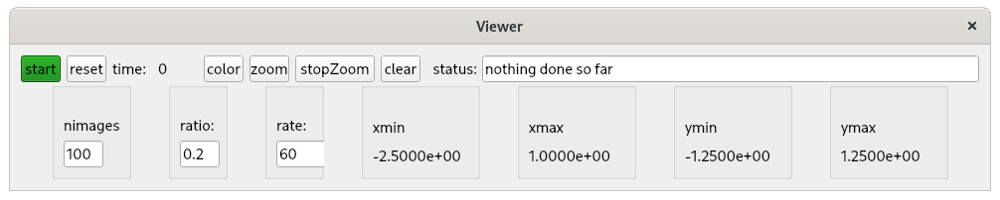
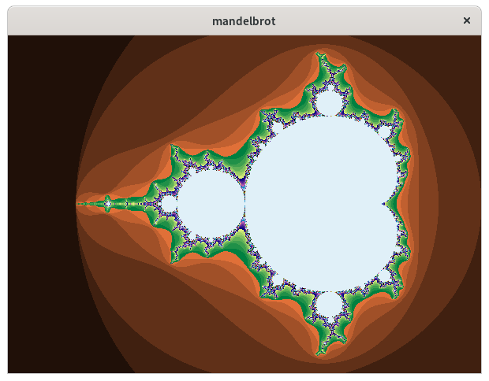

Introduction
This document describes the following:
mandelbrot example
This is an example of a Python Image Viewer that issues channelPutGet requests to a PVRecord that
creates a mandelbrot image.
See:
Mandelbrot set
for a descripton of mandelbrot images.
When the viewer is started the following appears:

When start is clicked the following appear:

plot2dcurves example
This is an example of a Python Image Viewer that monitors data from a PVRecord.
Other python clients create 2d curves and issue channelPuts to the PVRecord
database example
This discusses the IOC database used by mandelbrot and plot2dcurves
Installation
Python
Python3 is required as well as using pip to install the following:
numpy
PyQt5
PyQt5-sip
QtPy
p4p
pvapy
pyqtgraph
EPICS7
An EPICS7 release is required.
See:
EPICS7
testPython
After EPICS7 has been built then in any directory you choose execute the following
git clone https://github.com/mrkraimer/testPython.git
cd testPython/database
EDIT RELEASE.local SEE BELOW
make
cd iocBoot/mandelbrotDatabase
../../bin/linux-x86_64/mandelbrotDatabase st.cmd
You are now ready to run the examples
RELEASE.local must be changed so that
the definition of EPICS7_DIR is the location where You built EPICS7.
mandelbrot
Python Code
Go to testPython/mandelbrot and you will see the following files:
- DisplayImagePVAPY.py
-
This normally started first as follows:
python DisplayImagePVAPY.py
This is the version that communicates with record TPYmandelbrotRecord
in the database.
- DisplayImage.py
-
This is the python code that creates and manages the Viewer window.
It is used by both DisplayImagePVAPY and DisplayImagePython.
- DisplayImagePython.py
-
This is a version that uses Python to create the images.
- MandelbrotCreatePython.py
-
This is the Python code that creates mandelbrot images.
Starting the Viewer
When the viewer is started as follows:
mrk> pwd
/home/epics7/testPython/mandelbrot
mrk> python DisplayImagePVAPY.py
The following appears:
The top row of the Viewer window has the following:
- start
-
When clicked the first time it displays the image shown above.
After an image is displayed,
a subimage can be selected by dragging your mouse, inside the image, in an upper left
to a lower right direction. When the mouse is released the selected
subimage is displayed and becomes the current image.
This process can be repeated multiple times.
- reset
-
When clicked it reverts to the opening image.
- time
-
This shows the time to create and display the latest image.
This is how the performance of the pure python impelmentation can
be compared with the version the uses the PVRecord.
On my computer the time for the pure Python version was 5 seconds and the version
that uses the PVRecord was .07 seconds. Thus the C++ version is about
70 times faster.
- color
-
This is a toggle button that switches between color and mono.
Click on it and then click start for an example.
- zoom
-
Clicking this starts zooming in used the current nimages, ratio, and rate
settings from the lower row of the viewer.
- stopZoom
-
Clicking this stops the current zoom.
After the current zoom stops the last image displayed becomes the current image.
- clear
-
This is followed by a status widget that provides info about current status
or error messages. Clicking clear clears the current status.
The lower row of the Viewer window has the folllowing:
- nimages
-
The number of images that will be displayed when zoom
is clicked.
- ratio
-
This is the ratio (both width and height) of the final image vs the current image.
- rate
-
The is the fastest rate, in images per second, that images will be displayed.
- xmin,xmax,ymin,ymax
-
These show the x,y limits for the current image.
plot2dcurves
Python code
Go to testPython/plot2dcurves and you will see the following files:
- PVAPY_Dynamic_Viewer.py and P4P_Dynamic_Viewer.py
-
You will normally start one of these as follows:
python PVAPY_Dynamic_Viewer.py
One uses pvapy and the other uses p4p for communication with the IOC.
- PVAPYaddDynamicRecord.py and P4PaddDynamicRecord.py
- One of these must be run in order to create the PVRecord required
by this application. For example:
python PVAPYaddDynamicRecord.py
Again one uses pvapy and the other uses p4p for communication with the IOC.
- PVAPYgenerateCurve.py and P4PgenerateCurve.py
- Either of these can be used to generate a 2d curve.
See below for details.
Starting a Viewer
The following:
python PVAPY_Dynamic_Viewer.py
displays the following viewer:
Creating record TPY_2dcurve
The following creates the PVRecord required by this application.
python PVAPYaddDynamicRecord.py
At this point you can click start on the viewer window.
A blank image will appear until you run a curve generation program.
Curve generation
The following
mrk> python PVAPYgenerateCurve.py
argument must be one of: ('line', 'circle', 'ellipse', 'clover', 'heart', 'lissajous', 'figureight')
mrk> python PVAPYgenerateCurve.py circle
name= circle xmin= -1.0 xmax= 1.0 ymin= -1.0 ymax= 1.0
putrate= 468 per second
mrk>
Generates a circle.
You should now see the folllowing image:
If you look at the image while PVAPYgenerateCurve is running you
will see the curve being dynamically created.
Now try generarating some of the other 2d curves.
database
Overview
testPython/database
creates an IOC database that can have DBRecords for any of the record types
provided by EPICS base.
In addition it has PVRecords required by maldebrot and plot2dcurves.
When the database is started as follows:
mrk> pwd
/home/epics7/testPython/database/iocBoot/mandelbrotDatabase
mrk> ../../bin/linux-x86_64/mandelbrotDatabase st.cmd
It has the following records:
epics> dbl
TPYcounter01
epics> pvdbl
TPYaddRecord
TPYmandelbrotRecord
TPYremoveRecord
TPYtraceRecord
epics>
testPython/database
is designed for two purposes:
- testPython
-
The record TPYmandelbrotRecord is the record that creates maldebrot images.
The record TPYaddRecord is used by plot2dcurves to create record named
TPY_2dcurve
- example
-
This can be a model for creating other IOC databases that has a combination
of DBRecords and PVRecords.
To use it for another application just recursively copy database to
another location and make necessary modifications.
Brief description of testPython/database
This section describes all the files in database.
It describes them from the point of view of someone who creates a copy
in order to create another IOC database.
database
- RELEASE.local
-
This is the only file in this directory that needs modification.
The only thing that is normaally changed is
EPICS7_DIR=/home/epics7/base-7.0.3.1
It must be changed to access your EPICS7 system.
- CONFIG_SITE.local
-
This should not need any changes.
- Makefile
-
This should not need any changes.
- configure/*
-
None of these files need any changes.
database/src
- Makefile
-
This needs changes.
- pv/mandelbrotRecord.h
-
This and the following C++ file implement code
that creates a maldebrot image.
It can be used as a model of how to create your own PVRecords.
- mandelbrotRecord.cpp
-
This is the implementation.
- mandelbrotRecordRegister.cpp
-
This implements the code that is called via the iocshell
to create mandelbrot records.
- mandelbrotRecordRegister.dbd
-
This is the definition that makes the iocshell aware of mandelbrotRecordRegister.
database/dbSrc
- Makefile
-
- dbCounter.db
-
database/iocSrc
This is where code for an IOC database is created.
It is the standard way to build an IOC database.
- MakeFile
-
This needs modification for other databases.
- mandelbrotDatabaseInclude.dbd
-
Other than the definition for mandelbrotRecordRegister.dbd
this does not need modification.
- mandelbrotDatabaseMain.cpp
-
This does not need an change except the name itself.
database/iocBoot
- Makefile
-
Change this to add definitions for each subdirectory.
database/iocBoot/mandelbrotDatabase
- Makefile
-
Should not need change.
- st.cmd
-
This needs changes.